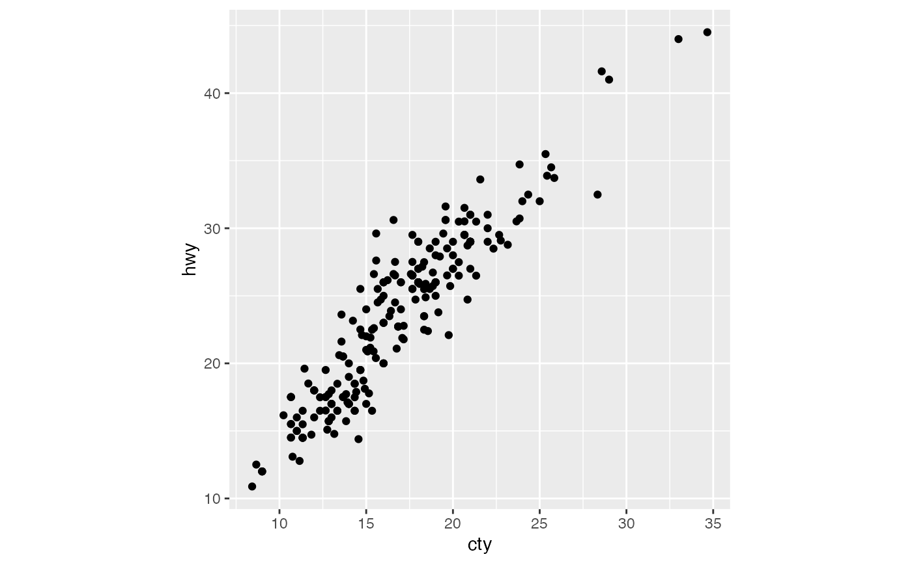

R/position-jitter-quasiloc.R
position_jitter_quasiloc.Rd2D Jitter points to avoid overplotting based on Sobolev local sequence
position_jitter_quasiloc(weight = NULL, seed = NA)spread factor.
If omitted, just include the spread in the data.
A random seed to make the jitter reproducible. Useful if you need to apply the same jitter twice, e.g., for a point and a corresponding label. The random seed is reset after jittering. If `NA` (the default value), the seed is initialised with a random value; this makes sure that two subsequent calls start with a different seed. Use `NULL` to use the current random seed and also avoid resetting (the behaviour of ggplot 2.2.1 and earlier).
logical, if its TRUE it uses the Sobol sequence to generate points locally, and it is false generate a complete sobol sequence for all points.
Other position adjustments:
position_jitter_gauss(),
position_jitter_quasi(),
position_jitter_quasitog()
ggplot2::mpg |> ggplot2::ggplot(ggplot2::aes(cty, hwy)) +
geom_jitter_quasiloc() + ggplot2::theme(aspect.ratio = 1)
